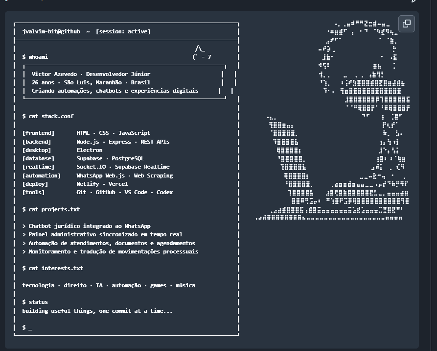
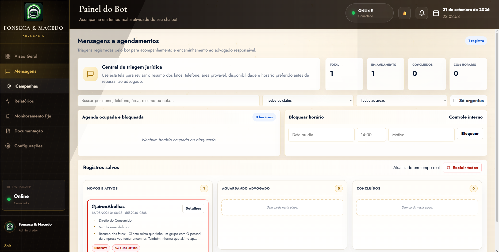

jvalvim-bit / README.md
Victor A.

olá, eu sou
Desenvolvedor de produtos digitais, IA
e automações que trabalham de verdade.
transformando operações difíceis em experiências simples ↓

Um workspace social para organizar presença, rotina e colaboração em uma interface viva.
produto · electron · realtimeAtendimento integrado ao WhatsApp, com contexto, documentos e fluxo de agendamentos.
automação · whatsapp · node.jsExperimentos com triagem, resumos e assistentes que ajudam em tarefas concretas.
inteligência artificial · produtoPainéis administrativos sincronizados para tornar operações visíveis e previsíveis.
supabase · socket.io · dadosDa conversa inicial à entrega em produção.
Desenvolvimento e manutenção dos módulos de clientes, financeiro, projetos, contratos, estoque, campanhas, formulários, calendário e comunicação interna.
Integrações com WhatsApp Cloud API, Meta Ads, Google Ads e autenticação social; backend, banco de dados, permissões e implantação na Vercel.
Funcionalidades em tempo real, notificações, controle de usuários, anexos, sincronização de dados, interfaces responsivas e painéis administrativos.
Criação de fluxos de automação para triagem, agendamentos, envio de documentos e atualização de atendimentos.
Painel administrativo e integrações em tempo real com Node.js, Electron, Supabase e Socket.IO.
Suporte técnico, monitoramento operacional, correção de falhas, consultas automatizadas, notificações e melhorias contínuas de usabilidade.
Estruturação de prompts, contexto e integrações para triagem, síntese de informações, atendimento e apoio à tomada de decisão.

Atendimento jurídico automatizado pelo WhatsApp, documentos e agendamentos em um fluxo contínuo.
Uma experiência desktop autoral para reunir organização, presença e colaboração em tempo real.
Ferramentas para triagem, síntese de informações e apoio inteligente a rotinas reais.